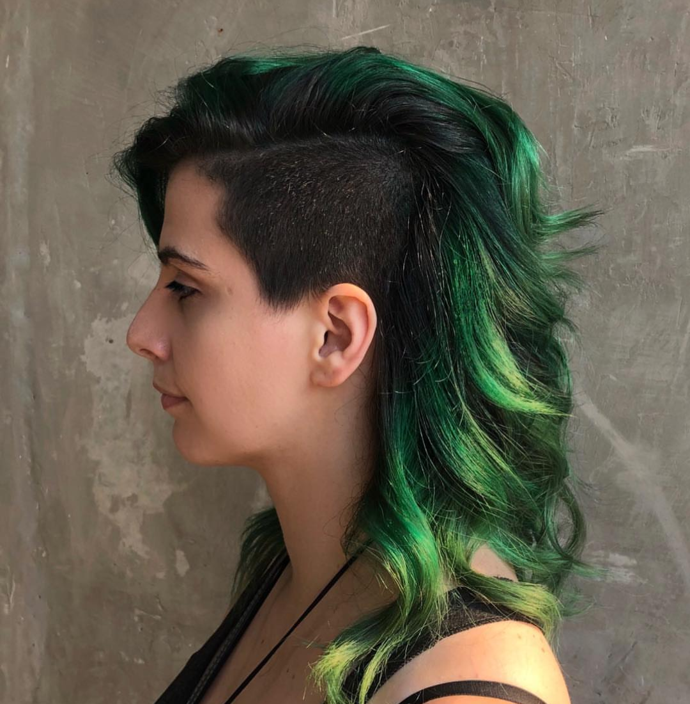

About Me

Miranda Loosle
Hello there, my name is Miranda Loosle. I am a Utahan living in Texas with my husband and our two cats and dogs. I come from a family of seven, five kids. I am a big fan of horror movies, comic-books, Pokemon, anime, crystals, and cooking.
I’ve worked for the same company for the last nine years; my key highlights from my last nine years of work are being an assistant, event planning, laying the foundation for a new service, managing all support requests and reproducing bugs, QA testing, new feature user story writing, enhancement management, and sprint planning.
Currently working on expanding my knowledge base and experience.